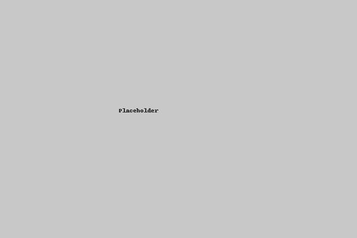

I'm Frank Wu, a UI/UX designer.
A UI/UX Designer passionate about user research and thoughtful design.
Hi, I’m Frank – a UX designer passionate about research and building user-centered experiences. Here are some of my featured projects:

Smart Station – Interactive Trolley Return System
Designed a public-facing gamified system to motivate better cart return habits using user research and feedback loops.
View ProjectOnline Fashion Shopping with AI
Created a shopping interface with AI-matching logic to reduce decision fatigue and enhance user satisfaction.
View ProjectSTEM Learning for Remote Students
Developed a gamified educational tool to boost engagement among students in underserved areas.
View Project